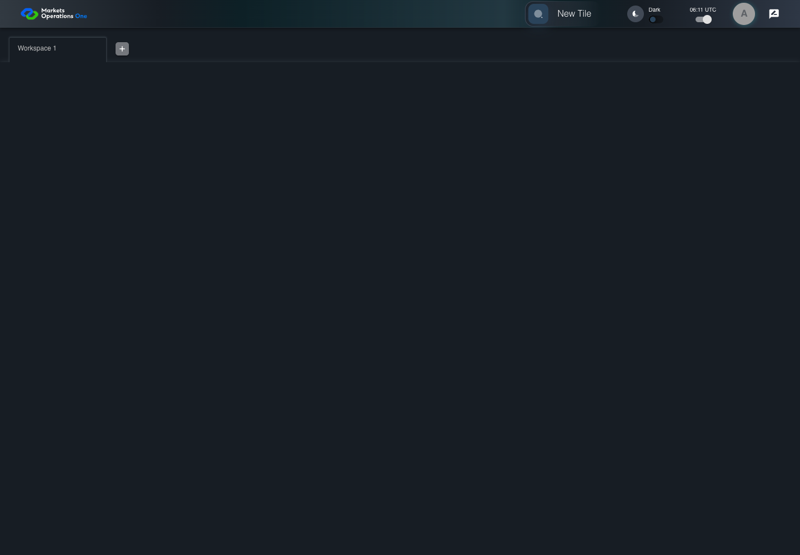

UX-001 keyboard and accessibility probe
PASS · application/run-050/ux-001-keyboard-and-accessibility-probe-aa89dc4df1df-attempt-1 · ACTUAL_APPLICATION_LOCAL_SERVICES
Actual React shell. Controlled catalog, user identity, photo failures, and SystemJS tenant. Chromium only. Accessibility and layout outcomes are proposed probes; no approved conformance standard is inferred.
2026-10-22T06:11:16.200Z to 2026-10-22T06:11:18.931Z
Assertions and result · Artifact manifest · Exact run inputs and source hashes
Result SHA-256:69745152796253c348b892ed18e79cadb890f3fec1a90f2a39b755219c715018Machine observations
- focus-trace-forward.json
29916a44c3da8d3871f88211d3d195737091998116a828a906fe845be3981bfe
Screenshot capture: CAPTURED. Named frames: 15.
Step screenshot evidence: COMPLETE. 4/4 canonical steps have execution screenshots.
Canonical step timeline
Given USER-A has Home visible with the Tile Options panel closed
Execution: PASSED.
1. step-01 Visible state after step 1: Given USER-A has Home visible with the Tile Options panel closed
2026-10-22T06:11:17.219Z · 1440×1000
Step: /Users/lushevol/code/github/ratan-release-impact/workbench/tasks/ui-test-coverage-20261022/test-cases.md:12327
SHA-256:365bc064ef8cf5c078cc86e5b2ea3862073c96c42997e29e292354516d2ec559When USER-A presses "Tab" repeatedly through the enabled controls inside the section with test ID "${MFE_APP_PREFIX_STYLE}_appBar" on the Home page
Execution: PASSED.2. focus-forward-1 Live keyboard focus checkpoint; computed CSS is retained separately.
2026-10-22T06:11:17.318Z · 1440×1000
Step: Named test assertion at the corresponding source location
SHA-256:f07dbd210aa61df2dd4c129d094c0066cfe8783bb7623a032b79c9914d5f70713. focus-forward-2 Live keyboard focus checkpoint; computed CSS is retained separately.
2026-10-22T06:11:17.398Z · 1440×1000
Step: Named test assertion at the corresponding source location
SHA-256:e6107662a39515fe7a3f86af2e9749213e5c6d92f8462ae2beac27e838ee8e43
4. focus-forward-3 Live keyboard focus checkpoint; computed CSS is retained separately.
2026-10-22T06:11:17.500Z · 1440×1000
Step: Named test assertion at the corresponding source location
SHA-256:72fb39f4718feb5739ceb7c8904d9bc1edd3a1d79892eea34c937d57ab198b0b5. focus-forward-4 Live keyboard focus checkpoint; computed CSS is retained separately.
2026-10-22T06:11:17.573Z · 1440×1000
Step: Named test assertion at the corresponding source location
SHA-256:2dc2f4d012b66fae5a68ff356b31882c1d2b5e43b28ff15a8fb91e343354bda8
6. focus-forward-5 Live keyboard focus checkpoint; computed CSS is retained separately.
2026-10-22T06:11:17.648Z · 1440×1000
Step: Named test assertion at the corresponding source location
SHA-256:2dc2f4d012b66fae5a68ff356b31882c1d2b5e43b28ff15a8fb91e343354bda87. focus-forward-6 Live keyboard focus checkpoint; computed CSS is retained separately.
2026-10-22T06:11:17.773Z · 1440×1000
Step: Named test assertion at the corresponding source location
SHA-256:3e07924545b97b91e118d9c582d9c9f9d8dab5fe5c4ec58958476a783cdbbd968. focus-forward-7 Live keyboard focus checkpoint; computed CSS is retained separately.
2026-10-22T06:11:17.873Z · 1440×1000
Step: Named test assertion at the corresponding source location
SHA-256:dc4f2e53486bf3ea6db8944987d9a79012c54d355226a3c1d1c982f231f5fba49. focus-forward-8 Live keyboard focus checkpoint; computed CSS is retained separately.
2026-10-22T06:11:17.971Z · 1440×1000
Step: Named test assertion at the corresponding source location
SHA-256:eed6fe37ae5c3bca06186c28ee03d167fd3d7a40e4b79a0f745be6d9e1e2a7c410. focus-forward-9 Live keyboard focus checkpoint; computed CSS is retained separately.
2026-10-22T06:11:18.055Z · 1440×1000
Step: Named test assertion at the corresponding source location
SHA-256:269ff9270c7a86fa29fcb0b9f2151773751f0890bbe3628b8126f48aaffc472711. focus-forward-10 Live keyboard focus checkpoint; computed CSS is retained separately.
2026-10-22T06:11:18.146Z · 1440×1000
Step: Named test assertion at the corresponding source location
SHA-256:c8395ec34c8ef6a92c02196ebd42491117dfd4559baab2782d1538e42842d9af12. step-02 Visible state after step 2: When USER-A presses "Tab" repeatedly through the enabled controls inside the section with test ID "${MFE_APP_PREFIX_STYLE}_appBar" on the Home page
2026-10-22T06:11:18.224Z · 1440×1000
Step: /Users/lushevol/code/github/ratan-release-impact/workbench/tasks/ui-test-coverage-20261022/test-cases.md:12328
SHA-256:473688bd1d6713a59dc9dfa2f1c06976efb87f4bcfe65d85233ff0b1a3419fe0Then The retained focus trace contains every enabled header control once before workspace focus
Execution: PASSED.
13. step-03 Visible state after step 3: Then The retained focus trace contains every enabled header control once before workspace focus
2026-10-22T06:11:18.309Z · 1440×1000
Step: /Users/lushevol/code/github/ratan-release-impact/workbench/tasks/ui-test-coverage-20261022/test-cases.md:12329
SHA-256:473688bd1d6713a59dc9dfa2f1c06976efb87f4bcfe65d85233ff0b1a3419fe0And Each traced control has a visible focus indicator in the retained screenshots
Execution: PASSED.
14. step-04 Visible state after step 4: And Each traced control has a visible focus indicator in the retained screenshots
2026-10-22T06:11:18.371Z · 1440×1000
Step: /Users/lushevol/code/github/ratan-release-impact/workbench/tasks/ui-test-coverage-20261022/test-cases.md:12330
SHA-256:473688bd1d6713a59dc9dfa2f1c06976efb87f4bcfe65d85233ff0b1a3419fe0
Additional named frames

The final visible state after the named test assertions.
2026-10-22T06:11:18.507Z · 1440×1000Step: Test source: /Users/lushevol/code/github/ratan-release-impact/workbench/e2e/audit-specs/ux-shell.spec.ts:39
SHA-256:
473688bd1d6713a59dc9dfa2f1c06976efb87f4bcfe65d85233ff0b1a3419fe0Screenshots establish visible state only. Assertions and traces support functional claims.